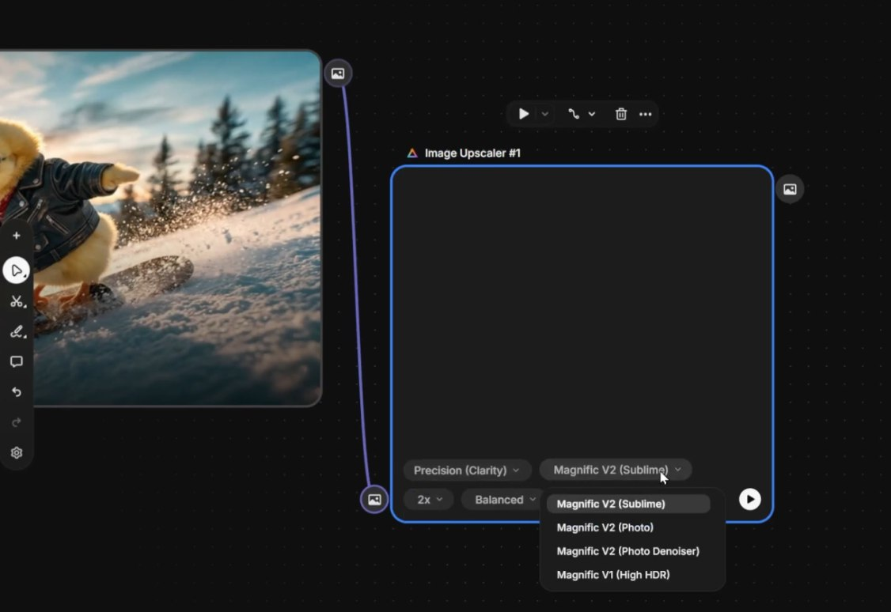

🎯 A Fórmula do Pipeline
Dentro do Spaces não existe um botão mágico — existe uma estrutura clara de workflow. Toda produção profissional de conteúdo com IA segue essa mesma sequência. Decore essa fórmula: ela é o alicerce de tudo que vamos construir.
🧠 A Fórmula Universal
[Texto] → [Assistente] → [Imagem] → [Upscale] → [Vídeo] → [Música] → [SFX]
Cada seta representa uma conexão de dados entre nodes. A saída de um node é a entrada do próximo. Essa fórmula transforma um conceito de uma frase em um pipeline completo de produção audiovisual — texto vira prompt, prompt vira imagem, imagem vira vídeo, vídeo ganha trilha e efeitos.
- →Texto: a ideia bruta — uma frase, um conceito
- →Assistente: transforma a frase em prompt profissional
- →Imagem: o frame fundador da cena
- →Upscale: qualidade máxima antes de virar vídeo
- →Vídeo: animação cinematográfica a partir da imagem
- →Música + SFX: trilha e efeitos que dão vida à cena

Pipeline completo no canvas: nodes encadeados implementando a fórmula universal
📝 Text Node
Tudo começa aqui. O Text Node é o lugar onde você escreve a ideia crua, sem se preocupar em fazer o "prompt perfeito". Pode ser uma frase, um conceito, até uma palavra-chave. É o ponto de partida cognitivo — o resto do pipeline existe para refinar isso.
📝 O que é o Text Node
Um node simples que armazena texto livre. Ele pode ser usado como prompt, anotação, instrução ou variável que será passada para outros nodes. No canvas, você pode redimensioná-lo, usar negrito e formatar para destacar variáveis importantes.
- •Função: armazenar e propagar texto pelo pipeline
- •Uso típico: ideia inicial da cena ou prompt customizado
- •Saída: string conectada a Assistant ou Generator

Text Node real: a ideia "Um pequeno pintinho amarelo usando uma jaqueta de couro preta andando de snowboard em uma montanha nevada" — ainda bruta, ainda sem a estrutura cinematográfica. É exatamente assim que todo pipeline começa.
💡 Não Tente Ser Profissional Aqui
A pior coisa que você pode fazer é tentar escrever um prompt cinematográfico perfeito no Text Node. Esse não é o trabalho dele. Escreva como se fosse contar a ideia para um amigo. O Assistant Node faz o trabalho pesado depois.
🤖 Assistant Node
O Assistant Node é seu engenheiro de prompt residente. Ele pega aquela ideia crua do Text Node e a transforma em um prompt profissional, técnico, cinematograficamente competente — tudo otimizado para o modelo de geração específico que você vai usar (Nano Banana Pro, Flux, Mystic, Kling, etc).
🤖 Como funciona
O Assistant Node é um LLM rodando dentro do Spaces. Você dá a ele duas coisas: (1) uma instrução de meta-prompt explicando o que ele deve fazer e (2) o texto da ideia. Ele devolve um prompt estruturado pronto para ser conectado ao Image Generator.
- →Entrada 1: a ideia crua (do Text Node)
- →Entrada 2: instrução de transformação
- →Saída: prompt cinematográfico pronto para gerar
📋 Meta-prompt da Aula (copie e cole)
"Escreva um prompt cinematográfico detalhado para imagem com base nesta ideia: um pequeno pintinho amarelo usando uma jaqueta de couro preta andando de snowboard. Foque em iluminação, atmosfera e composição cinematográfica."
Variação para vídeo (Kling): "Crie um prompt cinematográfico para Kling. Foque no movimento dinâmico do snowboard, vento atravessando o ambiente e movimento suave de câmera."

Assistant Node conectado ao Text Node — recebe a ideia e devolve um prompt profissional pronto para o Image Generator
🖼️ Image Generator Node
Aqui é onde a mágica acontece visualmente. O Image Generator Node recebe o prompt do Assistant e gera a imagem — mas com muito mais controle do que o gerador standalone. Aqui você escolhe o modelo, conecta references, define aspect ratio e refina cada parâmetro técnico.
🖼️ Painel de Configuração
- •Model: Nano Banana Pro (consistência), Flux 2 Max (qualidade), Mystic (retratos)
- •References: imagens de input que travam estilo, personagem ou composição
- •Aspect ratio: 16:9 cinema, 9:16 vertical, 1:1 quadrado
- •Style: photography, cinematic, illustration
- •Camera: ângulo, lente, tipo de plano

Image Generator Node real: painel completo com modelo Nano Banana Pro selecionado, references à esquerda e parâmetros à direita — tudo configurado para gerar a primeira versão do pintinho snowboarder

Resultado: a imagem cinematográfica do pintinho gerada a partir do prompt refinado pelo Assistant
🎥 Image-to-Video
Por que não pular direto para o vídeo? Porque gerar uma boa imagem primeiro cria vídeos infinitamente melhores. Quando você usa a imagem gerada como frame inicial do vídeo, o modelo de vídeo herda todas as decisões já feitas: identidade do personagem, paleta, iluminação, composição. Isso elimina a maior fonte de inconsistência.
🎥 Por que image-first vence text-to-video?
Modelos de vídeo são treinados para preservar o frame inicial e animá-lo. Quando você dá a ele uma imagem já validada, todas as variáveis visuais ficam congeladas — o modelo só precisa decidir movimento, não aparência.
- ✓Consistência do personagem: rosto e roupa não mudam
- ✓Consistência do ambiente: cenário e luz permanecem
- ✓Consistência de estilo: paleta e mood não derretem
- ✓Foco no movimento: o prompt do vídeo só descreve a ação

Video Generator Node — recebe a imagem como frame inicial e o prompt de movimento separadamente. Modelo Kling escolhido para qualidade cinematográfica.
📋 Conexões do Video Generator
- • Start image (CRUCIAL): a imagem gerada e validada — fixa toda a aparência
- • Prompt de movimento: vem de um segundo Assistant, focado em ação
- • Modelo: Kling 2.1 (alta qualidade cinematográfica)
- • Duração: 5-10 segundos por geração
🎵 Music + SFX Nodes
Vídeo sem som é meio filme. O Spaces inclui dois nodes dedicados a áudio: Music Generator para trilhas e Sound Effects para efeitos pontuais. Ambos funcionam com prompts de texto descritivos, igual aos geradores de imagem — só que para o ouvido.
🎵 Music Generator Node
Cria trilha sonora cinematográfica a partir de descrição textual de mood, gênero e instrumentação.
Ex: "Trilha sonora eletrônica cinematográfica e energética para snowboard, atmosfera aventureira, bateria marcante e sintetizadores modernos."
🔊 Sound Effects Node
Gera efeitos sonoros pontuais — vento, passos, impactos, ambiência. Camadas que enriquecem a cena.
Ex: "Vento frio soprando por uma encosta alpina nevada."

Music Generator e Sound Effects Nodes adicionados ao final do pipeline — cada um com seu prompt independente
🔄 Iteração Criativa
A maior vantagem do Spaces sobre qualquer ferramenta de chat: você pode modificar uma única etapa sem refazer tudo. Cliente pediu para mudar o ambiente? Edite só o Text Node. O resto do pipeline atualiza automaticamente — Assistant gera novo prompt, Image Generator gera nova imagem, Video Generator gera novo vídeo, e a música pode ser mantida ou regenerada.
🔄 O que você pode iterar
- →Ambiente: "andando de snowboard" → "andando de surf na praia"
- →Iluminação: "manhã ensolarada" → "golden hour" → "tempestade"
- →Movimento: "câmera estática" → "dolly in lento" → "tracking lateral"
- →Câmera: close-up, wide shot, contra-plongée
- →Modelo: trocar Nano Banana por Flux 2 Max sem mexer no resto

Workflow finalizado — pronto para iteração rápida: cada node é um ponto de edição independente sem quebrar o fluxo
💡 Refinar > Recomeçar
A regra mais importante de produção com IA: se algo não ficou perfeito, nunca apague tudo. Identifique exatamente qual node está produzindo o problema e ajuste só ele. Isso transforma horas de retrabalho em minutos de iteração.
✅ Resumo do Módulo 3.2
Próximo Módulo:
3.3 — Controle Total com Nodes Avançados: List, Variations, Character Reference, Workflow Apps e colaboração em tempo real